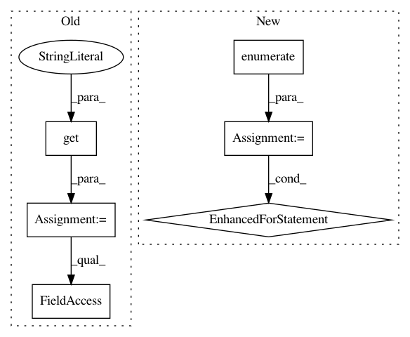

967eca1cc7511c793fed8ee92da80ee405f07921,nilearn/plotting/displays.py,OrthoSlicer,_locator,#OrthoSlicer#Any#Any#,990
Before Change
for ax, width in width_dict.items():
width_dict[ax] = width / total_width * (x1 - x0)
x_ax = display_ax_dict.get("x", dummy_ax)
y_ax = display_ax_dict.get("y", dummy_ax)
z_ax = display_ax_dict.get("z", dummy_ax)
left_dict = dict()
left_dict[y_ax.ax] = x0
left_dict[x_ax.ax] = x0 + width_dict[y_ax.ax]
left_dict[z_ax.ax] = x0 + width_dict[x_ax.ax] + width_dict[y_ax.ax]
return transforms.Bbox([[left_dict[axes], y0],
[left_dict[axes] + width_dict[axes], y1]])
After Change
for d in self._cut_displayed:
direction_ax.append(display_ax_dict.get(d, dummy_ax).ax)
left_dict = dict()
for idx, ax in enumerate(direction_ax):
left_dict[ax] = x0
for prev_ax in direction_ax[:idx]:
left_dict[ax] += width_dict[prev_ax]
return transforms.Bbox([[left_dict[axes], y0],
[left_dict[axes] + width_dict[axes], y1]])
def draw_cross(self, cut_coords=None, **kwargs):
In pattern: SUPERPATTERN
Frequency: 3
Non-data size: 6
Instances
Project Name: nilearn/nilearn
Commit Name: 967eca1cc7511c793fed8ee92da80ee405f07921
Time: 2016-05-23
Author: mperezguevara@gmail.com
File Name: nilearn/plotting/displays.py
Class Name: OrthoSlicer
Method Name: _locator
Project Name: onnx/onnx-coreml
Commit Name: ffed6ce438fc1ebdc8054d307ffdfce4bbf2f7f1
Time: 2019-09-03
Author: bhushan.s.94@gmail.com
File Name: onnx_coreml/_transformers.py
Class Name: GatherConstantRemover
Method Name: __call__
Project Name: OpenMined/Grid
Commit Name: d51dd50f93232f5542df1a8ccb2d91cee17c52d8
Time: 2020-07-08
Author: hericles.me@gmail.com
File Name: grid/app/main/sfl/cycles/cycle_manager.py
Class Name: CycleManager
Method Name: _average_plan_diffs